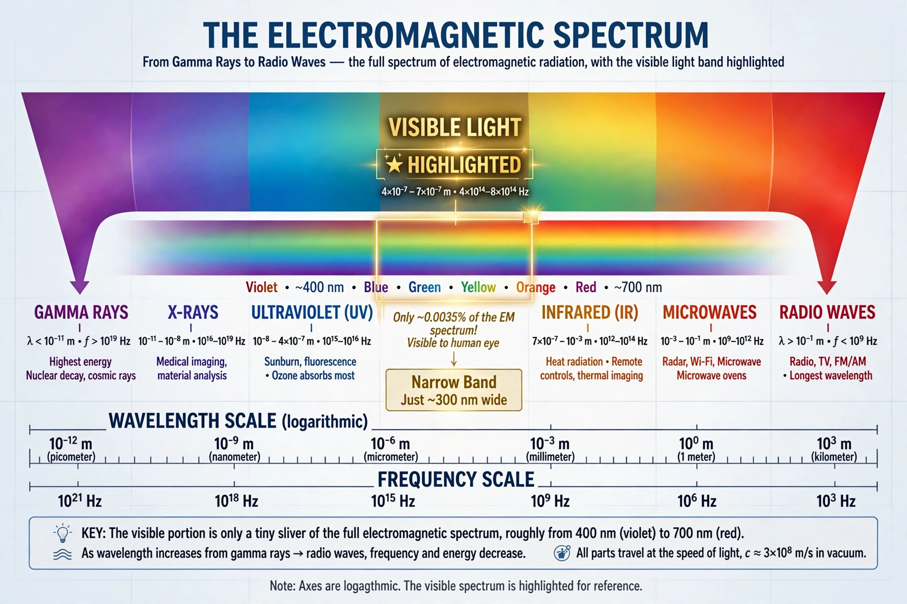

Electromagnetic spectrum
From Wikipedia, the free encyclopedia

The electromagnetic spectrum is the range of frequencies (and equivalently wavelengths) of Electromagnetic radiation, from gamma rays at the highest frequencies to radio waves at the lowest. Visible light occupies a tiny band, roughly 380–750 nanometres. All electromagnetic waves travel at the Speed of light in vacuum and differ only in frequency, wavelength and photon energy.
Regions
In order of increasing wavelength: gamma rays (emitted by nuclei and cosmic events), X-rays, Ultraviolet, visible light, Infrared, microwaves and radio. Boundaries are conventional — sources and detectors define them — and the spectrum is continuous; photon energies span from 10⁻¹⁵ eV (long radio) to over 10⁶ eV (gamma rays), which is why high-frequency radiation ionises matter while radio waves do not.
Discovery
Newton's prism experiments (1666) split visible light; Infrared was found by William Herschel (1800) and Ultraviolet by Johann Wilhelm Ritter (1801). James Clerk Maxwell's equations (1865) unified electricity, magnetism and light; Heinrich Hertz generated radio waves in 1887; Wilhelm Röntgen discovered X-rays (1895) and Paul Villard gamma rays (1900).
Uses
Each band has its technologies and sciences: radio and microwaves for communication and radar; infrared for thermal imaging and remote controls; visible light for vision and photography; ultraviolet for sterilisation; X-rays for medical imaging and crystallography; gamma rays for cancer therapy and astronomy. Atmospheric windows restrict ground-based astronomy to visible and radio bands.